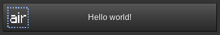

Layouting elements
You should do local gui = flow.widgets in your code to improve readability. All examples will assume that this line exists.
These elements control how other elements are arranged. Most of them draw nothing themselves: they place the elements inside them, work out how big everything is, and share out any spare space. Elements that draw something or accept input (labels, buttons, fields, ...) are described in Elements. To place elements at exact coordinates instead, see Manual positioning.
Warning: gui.VBox, gui.HBox, and gui.Stack do not support w and h properties and will break in weird ways if you try and use them. Use min_w and min_h instead.
The layouting elements that do take w and h are gui.ScrollableVBox and gui.PaginatedVBox (both are optional), and gui.Spacer. gui.Flow needs a w but does not support h, see Experimental.
gui.VBox
A vertical box, similar to a VBox in GTK. Elements inside a VBox are stacked vertically.
gui.VBox {
-- These elements are documented later on.
gui.Label { label = "I am a label!" },
-- The second label will be positioned underneath the first one.
gui.Label { label = "I am a second label!" },
}
Elements inside boxes have a spacing of 0.2 between them. To change this, you can add spacing = <number> to the box definition. For example, spacing = 0 will remove all spacing between the elements. gui.HBox and gui.Flow have the same spacing parameter and default. Spacing is the gap between the elements of a box, while padding is the space around a single element.
gui.HBox
Like gui.VBox but stacks elements horizontally instead.
gui.HBox {
-- These elements are documented later on.
gui.Label { label = "I am a label!" },
-- The second label will be positioned to the right of first one.
gui.Label { label = "I am a second label!" },
-- You can nest HBox and VBox elements
gui.VBox {
gui.Image { w = 1, h = 1, texture_name = "default_dirt.png", align_h = "center" },
gui.Label { label = "Dirt", expand = true, align_h = "center" },
}
}
gui.ScrollableVBox
Similar to gui.VBox, but shows its contents in an area of a fixed size that the player can scroll, and automatically adds a scrollbar next to it. Anything outside the area is hidden until it is scrolled into view. The area is w by h, both are optional: the width defaults to the width of the contents and the height defaults to the height of the contents, up to a maximum of 5.
On clients too old to support scrolling areas (before Luanti 5.4), flow shows one page of the contents at a time instead, with < and > buttons to change page.
To change how the scrollbar looks, set custom_scrollbar to a table of parameters for gui.Scrollbar, for example custom_scrollbar = {w = 0.8} to make it wider.
gui.ScrollableVBox {
-- A name must be provided for ScrollableVBox elements. You don't
-- have to use this name anywhere else, it just makes sure flow
-- doesn't mix up scrollbar states if one gets removed or if the
-- order changes.
name = "vbox1",
-- Specifying a height is optional but is probably a good idea.
-- If you don't specify a height, it will default to
-- min(height_of_content, 5).
h = 10,
-- These elements are documented later on.
gui.Label { label = "I am a label!" },
-- The second label will be positioned underneath the first one.
gui.Label { label = "I am a second label!" },
}
gui.Spacer
A "flexible space" element that expands by default. Example usage:
gui.HBox {
-- These buttons will be on the left-hand side of the screen
gui.Button { label = "Cancel" },
gui.Button { label = "< Back" },
gui.Spacer {},
-- These buttons will be on the right-hand side of the screen
gui.Button { label = "Next >" },
gui.Button { label = "Confirm" },
}
Prefer expand = true with align_h or align_v when that gives the same result. Spacers are implemented as hidden containers and do not handle some special cases.
You can replicate the above example without spacers, however the code doesn't look as clean:
gui.HBox {
-- These buttons will be on the left-hand side of the screen
gui.Button { label = "Cancel" },
gui.Button { label = "< Back", expand = true, align_h = "left" },
-- These buttons will be on the right-hand side of the screen
gui.Button { label = "Next >" },
gui.Button { label = "Confirm" },
}
You should not use spacers to center elements as it creates unnecessary boxes, and labels may be slightly off-center (because label widths depend on screen size, DPI, etc and this code doesn't trigger the centering hack):
-- This is bad!
gui.HBox {
gui.Spacer {},
gui.Label { label = "I am not properly centered!" },
gui.Spacer {},
}
You should do this instead:
gui.Label { label = "I am centered!", align_h = "center" },
This applies to other elements as well, because using HBox and Spacer to center elements creates unnecessary containers.
gui.Nil
A tool to allow for ternary-ish conditional widgets. Unlike an element with visible = false (see Hiding elements), which keeps its space, a gui.Nil takes up no space:
local form = flow.make_gui(function(player, ctx)
local the_boolean = false
return gui.VBox {
gui.Label { label = "The box below is only present if the boolean is truthy" },
the_boolean and gui.Box { w = 1, h = 1, color = "#FF0000" } or gui.Nil {},
}
end)
Use sparingly, flow still has to process each Nil object to be able to know to remove it, and thus could still slow things down. The fastest element is one that doesn't exist, and thus doesn't need processing.
gui.Stack
This container element places its children on top of each other. All child elements are expanded in both directions.
Note that some elements (such as centred labels) won't pass clicks through to the element below them.
Example
gui.Stack {
min_w = 10,
gui.Button { label = "Hello world!" },
gui.Image { w = 1, h = 1, texture_name = "air.png", padding = 0.2, align_h = "left" },
}

gui.PaginatedVBox
Like gui.ScrollableVBox, but splits the contents into pages instead of scrolling. Only one page is shown at a time, with a < button, a "Page 1 of 3" label, and a > button underneath to change page. It needs a unique name, and w and h work the same way as for gui.ScrollableVBox. Elements are never cut in half: an element that does not fit on a page starts the next one.
gui.ScrollableVBox uses this automatically on clients that cannot scroll.
gui.Flow
A container with a fixed width that wraps its children onto new rows when they do not fit. You must give it a w, and it does not support h, min_w, or padding. Use spacing to change the gap between elements (the default is the same as for gui.VBox). See Experimental features for details and an example.
gui.Padding (deprecated)
Wraps a single element to add padding around it. It is deprecated and logs a warning, use the padding parameter of the element itself instead, see Padding.